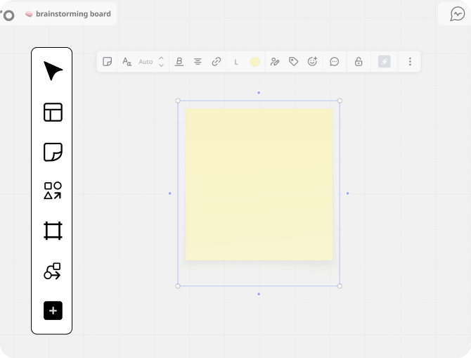

TransLink Interactive Map
Interaction Design (IAT 333)
Reimagining the existing map on TransLink's SkyTrain ticket machines to reduce confusion about the SkyTrain's zone-based fare system amongst new and inexperienced riders.
View Project →Hey there, I'm Irina Ng!
Interaction Design (IAT 333)
Reimagining the existing map on TransLink's SkyTrain ticket machines to reduce confusion about the SkyTrain's zone-based fare system amongst new and inexperienced riders.
View Project →
1st Place Pathway One – SparkJam Hackathon
A collection of new, customizable Miro features to assist blind and visually impaired individuals using screen readers to navigate and contribute to collaborative digital whiteboards.
View Project →